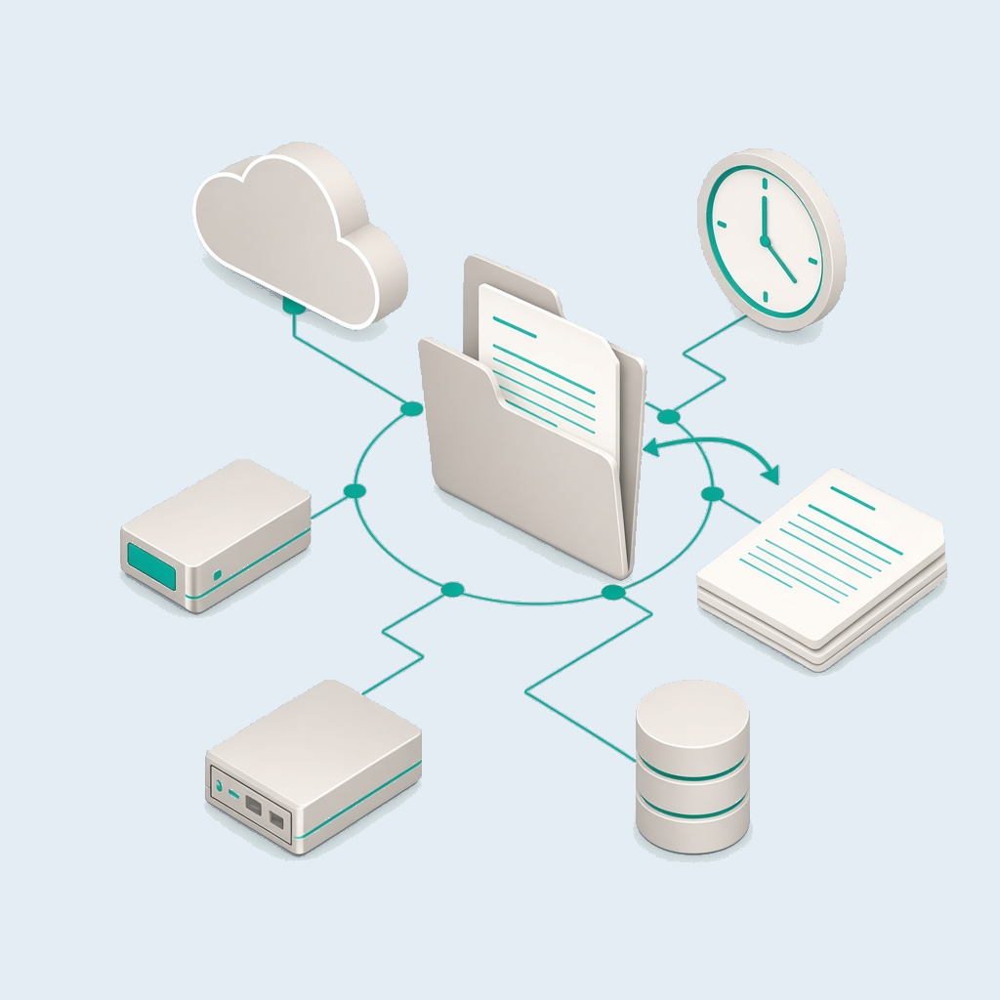
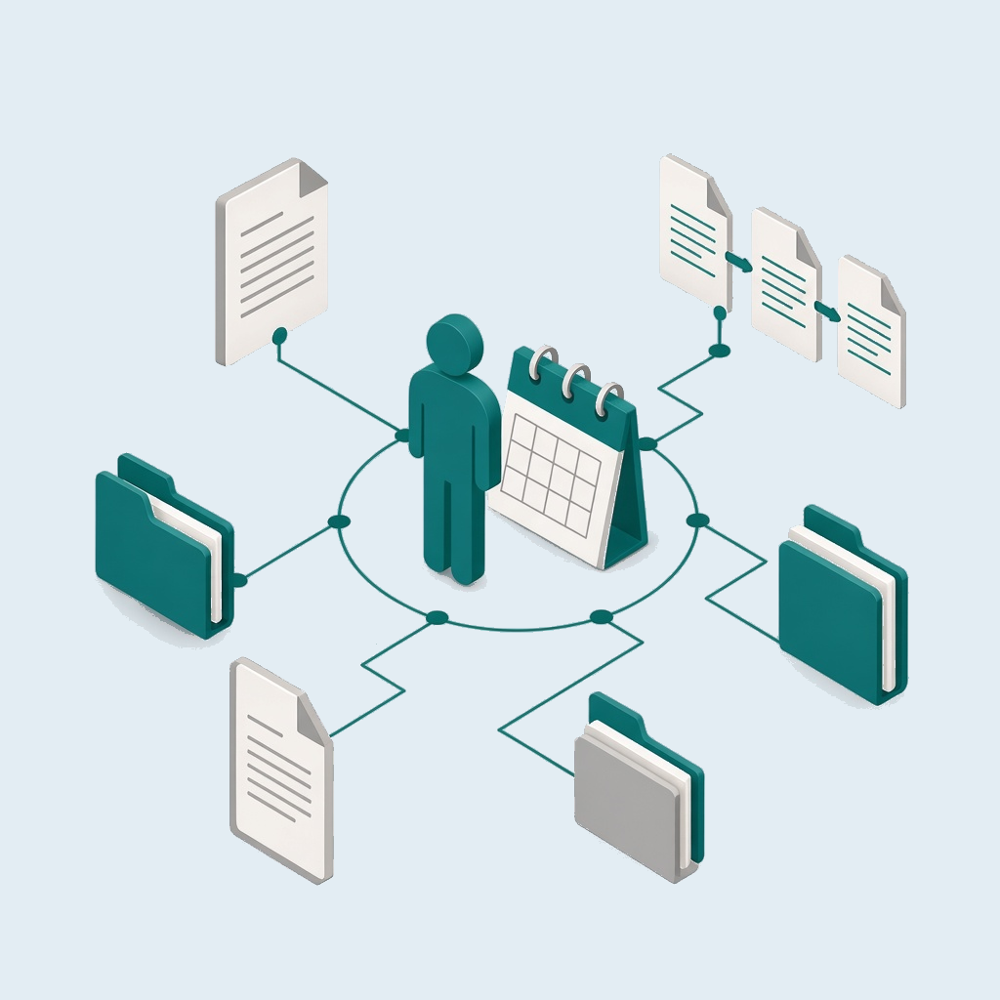

Le copie restano sui sistemi di Egonex?
No. Restano su disco, server, NAS o cloud che usi già, anche in doppia copia.
FileGuard monitora cartelle e file sensibili, tiene traccia e aiuta nella gestione di privacy e GDPR.
FileGuard sta sulle cartelle dove tieni documenti di altre persone e le osserva in continuo. Se un file viene spostato, modificato o cancellato, arriva l'avviso: vedi da quale computer è partita l'azione e dove è finito il file, anche su un'unità esterna. Le copie restano su disco, server, NAS o cloud che usi già, anche in doppia copia.

Serve a chi deve tenere sotto controllo informazioni di altre persone. Se un file è stato spostato o cancellato per errore, lo rimetti al suo posto in un click, grazie alla copia. Ogni modifica lascia una versione: il file in uso resta com'è e la versione che scegli viene messa accanto, nella stessa cartella.

Una procedura guidata installa FileGuard in pochi minuti; lo stesso account vale su tutti i computer. Poi scegli le cartelle e, su ognuna, fino a sei regole:
Decide chi gestisce la cartella: il programma non cancella da solo. Il dettaglio delle regole è nella pagina Funzioni.
Quando ti serve una risposta su un documento, la traccia c'è. FileGuard trova tutti i documenti di una persona in un periodo, ripercorre la storia di ogni file e mostra da quanto tempo è nella cartella. Quanto tenerlo lo decide chi gestisce la cartella.

No. Restano su disco, server, NAS o cloud che usi già, anche in doppia copia.
No. Arriva l'avviso, e vedi da quale computer è partita l'azione e dove è finito il file.
Sì, in un click, grazie alla copia. Se scegli una versione precedente, il file in uso resta com'è e la versione viene messa accanto.
Chi gestisce la cartella. Il programma non cancella da solo.
Dipende dalle funzioni che scegli. Vai in Piani per calcolare il prezzo o iniziare la prova gratuita.